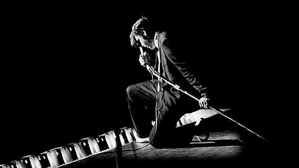
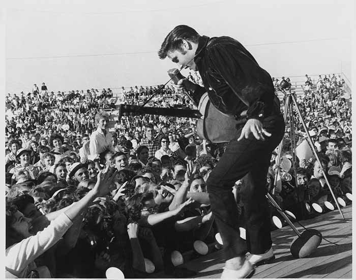

ELVIS PRESLEY
Rock’n’Roll

Le genre musical rock est apparu vers 1950 aux États-Unis. Le rock ressemblait alors à un mélange de jazz, de blues et de country music, mais aussi de bluegrass et certaines influences folk ou européennes ne sont pas à négliger. Depuis, le rock a évolué et il est maintenant devenu un style de musique puissant et très varié. Rocking (balancer, bercer), du jargon des chanteurs noirs de gospel, dans le sud des États-Unis, évoquait à l'origine un état d'extase spirituel; mais par la suite, pendant les années 1940, le terme devint à double-sens, le plus évident étant le mouvement de la danse, le sous-entendu étant sexuel.
Le rock connaît dès 1955 aux États-Unis un grand succès. Plusieurs artistes américains suivent Bill Haley : Elvis Presley, Buddy Holly, Jerry Lee Lewis, Eddie Cochran, Chuck Berry, Bo Diddley, Little Richard et bien d'autres. Les précurseurs avaient été dans leur immense majorité des musiciens noirs, à tendance jazzy : Louis Jordan, Big Joe Turner, mais aussi Louis Armstrong, Duke Ellington, Sidney Bechet, et tant d'autres, oubliés, négligés, minimisés.

pour tous, de l'explosion économique américaine (liée à l'énergie déployée pendant la guerre, mais c'est une autre histoire1!), et à l'invention de la guitare électrique, Fender en tête. Mais à la fin des années 1950, le rock'n'roll perd sa popularité et sa vitalité: les plus grands de l'époque « disparaissent », comme Elvis Presley, le Roi, qui part au service militaire en 1958, en Allemagne, et raccroche la scène pour signer avec Hollywood la réalisation de 33 films, de qualité très discutée, pour ne revenir qu'en 1968; le sans relief Pat Boone prendra sa place dans les charts.
Pourtant, loin des États-Unis, on s'apprête à prendre le relais. La révolte des jeunes européens, et en particulier des jeunes britanniques, et aussi des allemands et des français, se servira du rock. Cette révolte contre un ordre établi qu'ils rejettent marquera le rock'n'roll, mais aussi se servira de lui, jusqu'à nos jours.